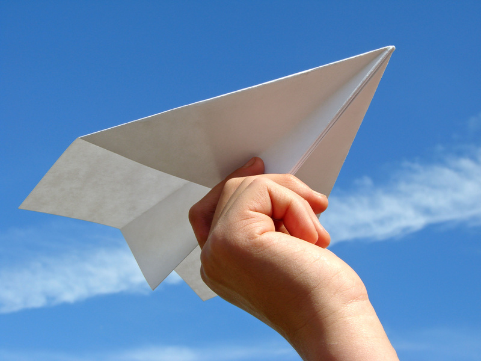

Як правильно робити літачок з папіру
Для того, щоб зробити класичний паперовий літачок, який добре літає, дотримуйтесь цих простих кроків. Вам знадобиться лише стандартний аркуш паперу формату А4. Інструкція з виготовлення паперового літачка Складіть аркуш навпіл уздовж: Покладіть аркуш паперу вертикально. Акуратно складіть його навпіл по довгій стороні та добре пропрасуйте лінію згину (можна нігтем або лінійкою). Розгорніть аркуш назад. Цей згин створить центральну направляючу лінію. Загніть верхні кути до центру: Візьміть верхні кути аркуша і загніть їх до центральної лінії так, щоб вони щільно прилягали один до одного. Має вийти гострий трикутник зверху. Загніть ще раз: Тепер візьміть краї нового трикутника (нові зовнішні краї) і знову загніть їх до центральної лінії. Літачок почне набувати більш вузької форми. Складіть літачок навпіл по центральному згину: Складіть усю конструкцію навпіл, згинаючи її від себе по тій самій центральній лінії, яку ви зробили на першому кроці. Всі зігнуті всередину кути мають бути приховані. Зробіть крила: Тепер потрібно сформувати крила. Загніть верхню частину літачка вниз з обох боків. Лінія згину крила повинна починатися приблизно на 1-2 сантиметри нижче від основного "тіла" літачка (тобто від центрального згину). Розправте крила: Акуратно розправте крила так, щоб вони були паралельні підлозі, або трохи підняті вгору (у формі літери "V", це додає стабільності). Ваш класичний паперовий літачок готовий до польоту! Поради для кращого польоту Точність: Намагайтеся робити всі згини максимально рівними та точними. Чим симетричніший літачок, тим краще він літає. Вага: Невеликий додатковий згин на кінчику носа (всередину або назовні) може допомогти збалансувати літачок. Запуск: Запускайте літачок плавним кидком, трохи піднявши ніс угору, а не сильно кидаючи його вперед.
